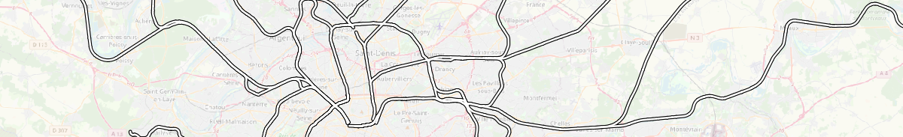

Railways
NoiseModelling is a tool for producing noise maps. To do so, at different stages of the process, the application needs input data, respecting a strict formalism.
Below are described the tables RAIL_SECTIONS and RAIL_TRAFFIC.
The other tables are accessible via the left menu in the Input tables & parameters section.

Warning
In the lists below, the columns noted with * are mandatory
Railways sections
Table name :
RAIL_SECTIONSDescription: contains all the sections of railways
Table definition
THE_GEOM*Description: Railway’s geometry
Type: Geometry (
LINESTRINGorMULTILINESTRING)
IDSECTION*Description: A section identifier (PRIMARY KEY)
Type: Integer
NTRACK*Description: Number of tracks
Type: Integer
TRACKSPD*Description: Maximum speed on the section (in km/h)
Type: Double
TRANSFER- Description: Track transfer function identifier
1= Mono-bloc sleeper on soft rail pad2= Mono-bloc sleeper on medium rail pad3= Mono-bloc sleeper on stiff rail pad4= Bi-bloc sleeper on soft rail pad5= Bi-bloc sleeper on medium rail pad6= Bi-bloc sleeper on stiff rail pad7= Wooden sleeper (Traverse en bois)
Type: Integer
ROUGHNESS- Description: Rail roughness identifier
1= Classic lines2= TGV (for France) lines
Type: Integer
IMPACT- Description: Impact noise coefficient identifier
0= No impact1= Single joint, switch or crossing per 100 m
Type: Integer
CURVATURE- Description: Section’s curvature identifier
0= R > 500 m1= 300 m < R < 500 m2= R < 300 m
Type: Integer
BRIDGE- Description: Bridge transfer function identifier
0= Any type of track or bridge except metal bridges with unballasted tracks1= Metal bridges with unballasted tracks + 5dB
Type: Integer
TRACKSPCDescription: Commercial speed on the section (in km/h)
Type: Double
ISTUNNELDescription: Indicates whether the section is a tunnel or not (
0= no /1= yes)Type: Boolean
Geometry modelling
The modeling of the geometry is identical to the road’s one (see “Roads” page). The only difference is that the affected height is not 5cm by default. It depends on the model used (e.g in CNOSSOS: rolling noise = 0.05m / aerodynamic noise = 4m ).
Railways traffic
Table name :
RAIL_TRAFFICDescription: contains all the railways traffic
Table definition
IDTRAFFIC*Description: A traffic identifier (PRIMARY KEY)
Type: Integer
IDSECTION*Description: A section identifier, refering to
RAIL_SECTIONStableType: Integer
TRAINTYPE*Description: Type of vehicle, listed in the Rail_Train_SNCF_2021.json file (mainly for french SNCF)
Type: Varchar
TRAINSPD*Description: Maximum train speed (in km/h)
Type: Double
TDAYDescription: Hourly average train count, during the day (6-18h)
Type: Integer
TEVENINGDescription: Hourly average train count, during the evening (18-22h)
Type: Integer
TNIGHTDescription: Hourly average train count, during the night (22-6h)
Type: Integer